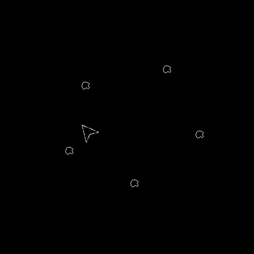

Testing the game, you likely noticed an issue: the ship can go out of sight beyond the room! This isn't very much fun and certainly not what we want to happen. Instead, we want the ship to "wrap around" the room, so when it goes out one side it will appear again on the opposite.
We could add in some code to check the x and y position and then move the player instance ourselves, but there is an easier way...
We're going to use another function from the GameMaker Language, move_wrap(). This function permits you wrap horizontally and/or vertically, as well as set a margin for wrapping to occur in., and we'll place it after all the other code in the "obj_ship" Step Event:
move_wrap(true, true, 0);
This will wrap the ship around the room along both the horizontal and vertical axis. You can test the room now and see what happens!

That's working okay, but there is a visible error as the ship reaches the edge of the screen. Because we have set the wrap margin to 0, the wrapping will occur the moment the player ship x or y position leaves the room. This means that the ship can be seen to "disappear" and then just as abruptly appear on the other side of the room. To resolve this we need to set the margin to a different value:
move_wrap(true, true, sprite_width / 2);
Here we use another instance variable, sprite_width, and set the wrap margin to be half the width of the sprite. This means that the instance will not be considered out of the room and be wrapped if it's not gone at least half the sprite width outside. So, since our sprite is 32px wide (and tall), it won't be wrapped until the position is greater than 16 pixels outside the room bounds. If the instance is moving right, for example, it will wrap when the x position is greater than 516 (room width is 500 plus half the sprite width which is 16).
If you test it again, you'll see that the wrapping looks much better.
With the player ship movement completed, let's go ahead and get the asteroids moving too.
Click the "Next" button to continue...